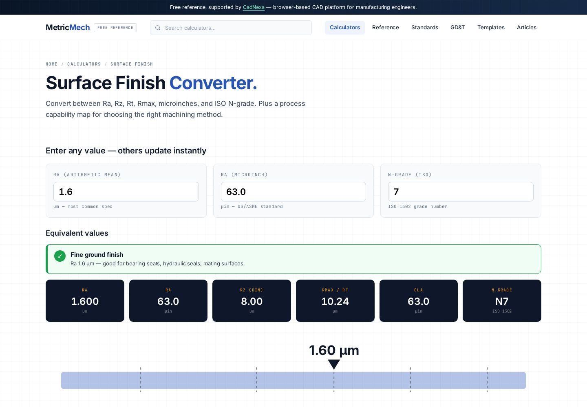

Surface finish: Ra vs Rz explained.
Ra and Rz are the two surface roughness parameters you see most on drawings, and they are not interchangeable. Ra is the average roughness; Rz is the average peak-to-valley height. This guide explains what each measures, how they differ, the rough conversion between them, and how to read the finish symbol on a print.

Why surface finish matters
Two parts can hold the same dimensional tolerance and behave completely differently in service because of their surface texture. Finish drives how a seal seats, how a bearing journal wears, how a coating adheres, how a fatigue crack starts, and how two faces slide. In my years on the shop floor, more warranty returns traced back to a wrong or unverified finish than to a missed diameter — because finish is the spec people forget to measure. Get it wrong and a perfectly in-tolerance part still leaks, seizes, or fails early.
What Ra is
Ra (arithmetic average roughness) is the average of the absolute distances of the surface profile from its mean line, taken over the sampling length. Picture the profile trace of a machined surface: Ra is the average height of all the peaks and valleys, ignoring their sign. It is reported in micrometres (um) in metric and microinches (uin) elsewhere.
Because Ra averages everything, it is stable and repeatable — one deep scratch barely moves the number. That is its strength for general texture control and its weakness when a single defect matters. Ra is by far the most specified parameter worldwide.
What Rz is
Rz (per ISO 4287) is the average maximum height of the profile. The instrument divides the evaluation length into five sampling lengths, finds the single largest peak-to-valley height in each, and averages those five values. Because it works from the extremes rather than the average, Rz responds strongly to isolated peaks, deep valleys, and tool chatter that Ra would smooth away.
Rz is always numerically larger than Ra for the same surface, and it is the parameter of choice when the worst feature, not the average, controls function — sealing faces, fatigue-loaded fillets, and surfaces about to be plated or coated.
Ra vs Rz at a glance
| Aspect | Ra | Rz |
|---|---|---|
| What it measures | Average roughness from mean line | Average of 5 max peak-to-valley heights |
| Sensitivity to defects | Low (averages them out) | High (driven by extremes) |
| Repeatability | Very stable | More variable |
| Typical use | General texture control | Seals, fatigue, coatings |
| Standard | ISO 4287 / ASME B46.1 | ISO 4287 / ASME B46.1 |
Converting between Ra and Rz
There is no exact mathematical conversion because the two parameters describe different things. For common turned and ground surfaces, Rz typically falls between 4 and 7 times Ra, and a widely used quick estimate is:
Rz ≈ 4 × Ra (rough, surface-dependent).
So an Ra of 1.6 um maps to an Rz somewhere around 6.4 um, often higher on a coarse or interrupted cut. Use this only to sanity-check, never to certify. To convert a real measured value quickly, drop the number into the surface finish calculator, which handles Ra, Rz, and microinch conversions together.
ISO roughness grade numbers (N grades)
Older drawings and many Indian shop standards still use ISO N grade numbers, which map to specific Ra values:
| ISO grade | Ra (um) | Ra (uin) | Typical process |
|---|---|---|---|
| N5 | 0.4 | 16 | Fine grinding, honing |
| N6 | 0.8 | 32 | Grinding, fine turning |
| N7 | 1.6 | 63 | Finish turning, milling |
| N8 | 3.2 | 125 | Medium machining |
| N9 | 6.3 | 250 | Rough machining |
| N10 | 12.5 | 500 | Coarse turning, casting clean-up |
Reading the finish symbol
The surface texture symbol (ISO 1302) is the open tick mark you see pointing at a surface. The roughness value sits to the upper left: a bare number is the Ra limit in micrometres, while a value prefixed with Rz (for example "Rz 6.3") calls out the peak-to-valley parameter instead. A horizontal bar added to the tick means material removal is required; a circle in the vee means no machining allowed. Always read whether the callout is Ra or Rz before you set the gauge — mixing them up is the single most common finish error on the floor.
Finish callouts live alongside dimensions and GD&T on the print, so they need to be captured in inspection just like any other characteristic. CadNexa's auto-ballooning tool numbers surface-finish callouts together with the dimensions and exports them, so the finish spec does not slip through the cracks during first article.
Common surface finish mistakes
- Treating Ra and Rz as the same. They are not. Measure the parameter the drawing names, not the one your gauge defaults to.
- Converting to certify. Rz ≈ 4 Ra is a sanity check, not a measurement. The factor swings with the process.
- Ignoring the cut-off length. Roughness values are meaningless without the correct sampling cut-off; a wrong cut-off changes the reading.
- Over-specifying finish. Demanding Ra 0.4 where Ra 1.6 works can double the machining cost for no functional gain.
- Skipping finish in inspection. Finish is a characteristic. If it is not ballooned and measured, it is not controlled.
Also on MetricMech: ISO 286 Hole Basis vs Shaft Basis System: A Design Engineer's Selection Guide.